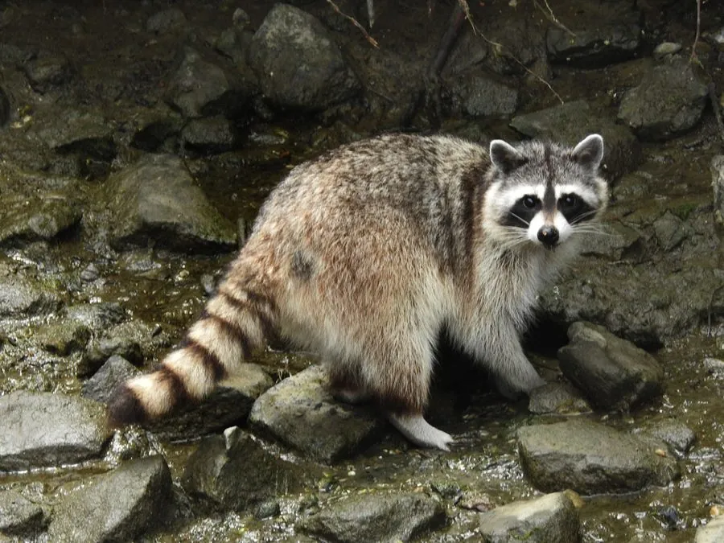

哺乳动物 · 动物界
浣熊 Procyon lotor

北美洲常见的中型食肉动物，脸上像戴着黑色面罩，前爪触觉灵敏，能适应城市生活，善于攀爬和游泳。
- 分类
- 门脊索动物门纲哺乳纲目食肉目科浣熊科属浣熊属
- 栖息环境
- 森林、湿地、草原与城市郊区，偏好靠近水源的环境
- 地理分布
- 北美洲和中美洲，从加拿大南部到巴拿马，并被引入欧洲等地
- 保护级别
- IUCN 无危（LC）
物种志
浣熊体长 0.4–0.7 米，尾长 0.2–0.4 米，体重 3.5–9 kg。它的被毛为灰褐色，面部有黑色眼罩状斑纹，眼周和吻部有白色边缘，尾巴上有 5–7 条黑白相间的环纹；前爪非常灵活，指头细长，触觉灵敏。
浣熊分布于北美洲和中美洲，从加拿大南部到巴拿马，栖息于森林、湿地、草原和城市郊区，适应力极强。它是杂食动物，食谱包括果实、坚果、昆虫、蛙、鱼、鸟蛋、小型兽类，也翻找人类垃圾。浣熊常在夜间活动，前爪会在水中搓洗食物，因此得名；它善攀爬和游泳，能直立行走。雌兽妊娠期约 63–65 天，每胎 2–5 仔。由于适应城市环境，浣熊数量在多数地区稳定甚至增长。
形态与习性
- 食性果实、坚果、昆虫、蛙、鱼、鸟蛋与小型兽类，也翻找垃圾
- 体长0.4–0.7 m，尾长 0.2–0.4 m
- 体重3.5–9 kg
- 寿命野外约 5 年，圈养可达 20 年
- 繁殖妊娠期约 63–65 天，每胎 2–5 仔
- 活动节律多在夜间活动
- 尾巴有 5–7 条黑白环纹
趣味知识
- 浣熊面部的黑色眼罩状斑纹像戴着一副面罩。
- 它常把食物放在水中搓洗，因此得名“浣”熊。
- 浣熊前爪触觉灵敏，能分辨极细微的质地差别。
- 城市里的浣熊会翻找垃圾桶，也会爬上屋顶筑巢。